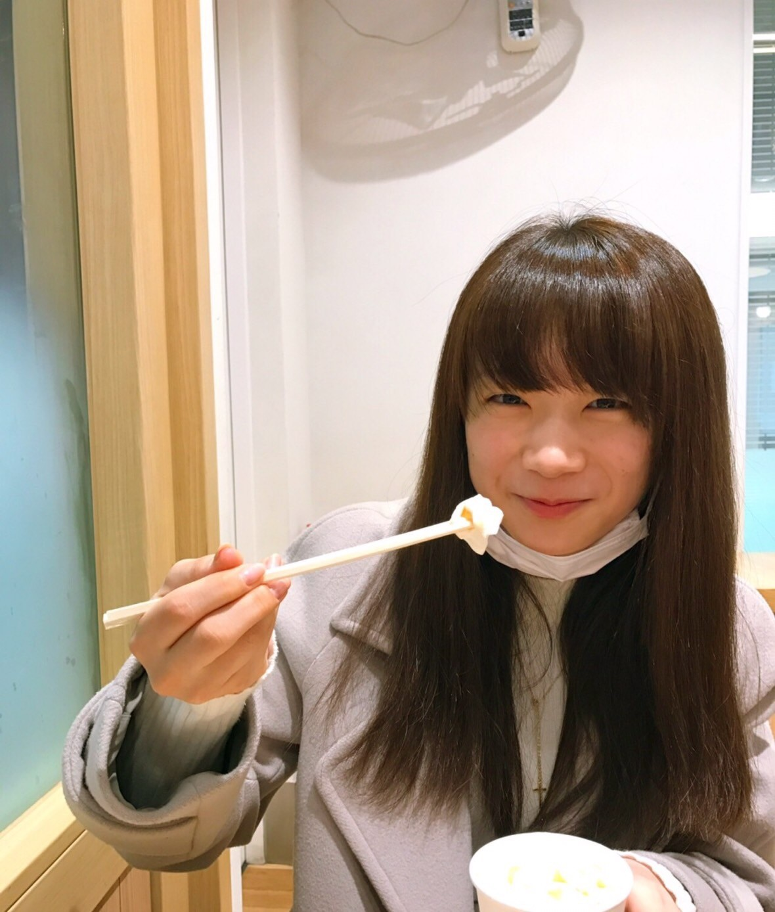
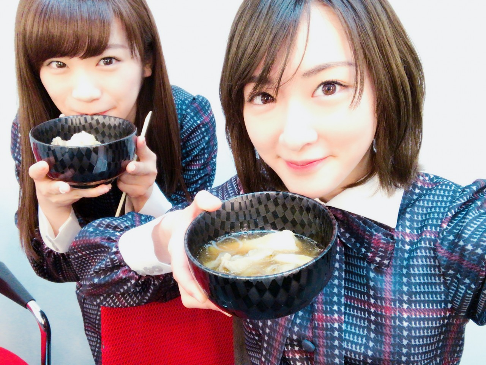
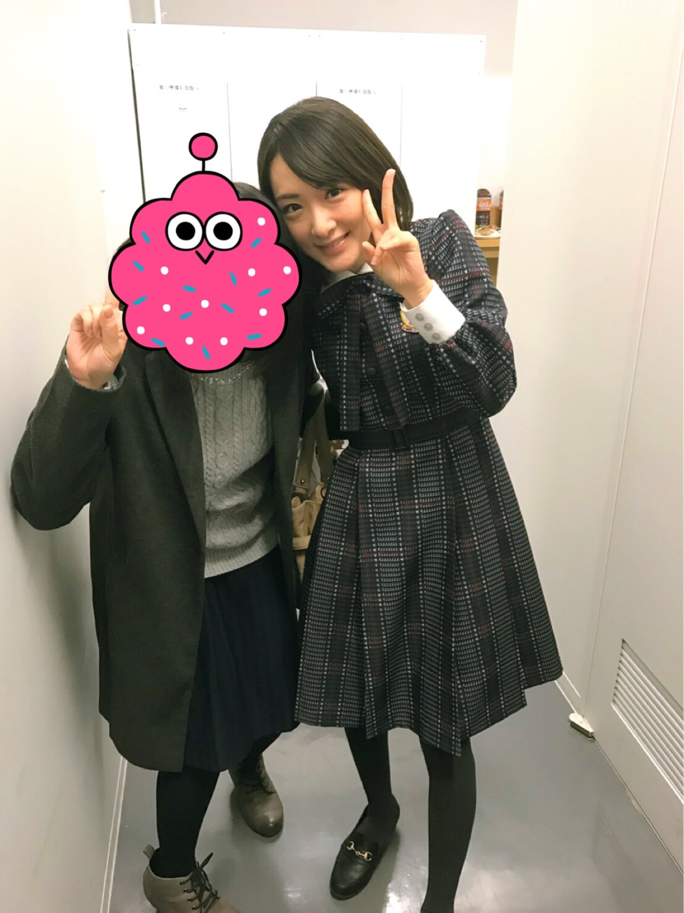

| 2017/03 15 Wed | 飛行機の離陸の時に膝がぎゅーんてなった。なんだあれ、ちょい痛だった。 |
いこまでーす(*´꒳`*)

朝、まなつはホットドリンクのクリームを箸で食べてたよおもしろいね☆☆
秋田といえばきりたんぽ(*´꒳`*)
ご用意して下さいました有難や。
やはり美味しいですなぁ

まなつおかわりしてたよ。
親友が来てくれたよ、

親友よありがとう(*´꒳`*)
短い時間だったけど、会えると落ち着くなぁ(つω｀*)
実は、あんまり親友と大人になってから遊んでないんよね〜
お互い離れてるし、
時間もあんまり合わないし(´；ω；｀)
でも、旅行は行くぜよ。
絶対に行くぜよ！！
秋田銀行さん主催のラジオの公開録音がありました。
応募して下さった皆様ありがとうございます！
そして会場に足を運んで下さった皆様ありがとうございました！！
夢をテーマに沢山お話しさせてもらいました。
地元秋田でだからか、
本音をズバッと言えました。
放送局とかあるから皆さん聴けるか分かりませんが、
今の私の夢がそこで語られております、ぜひ聴いてみてください(*´꒳`*)

りんごジュースとぶどうジュースで乾杯っ
帰りはお父さんにも会えたし、
充実した帰省お仕事でしたっ(*´꒳`*)
最近、秋田に帰れないから
だからこそ、地元でのお仕事がすごく嬉しいし、
やり甲斐を感じるし、
地元の方の応援を直接受け取る事が出来て幸せです。
秋田でライブがしたいよ。
夢だよ。
これは叶えたいよ〜(´；ω；｀)
頑張りますっ！！
夢ってないなって思ってたり、
夢なんて叶わないから持たない方がいいって
本気で思っていたあの頃の生駒ちゃん、
今の生駒ちゃんは、
夢を叶えたくてしょうがなくて、
その夢の為にする努力が大好きです。
目標って言葉も夢だと私は思います。
そんな自分になれたのは、
間違いなく、
今まで自分なりに頑張ってきた自分がいたからだなって思いました。
いやはや、秋田のパワーはすごい、
私の心を綺麗にしてくれる(*´꒳`*)
また帰って来るねっヽ(・∀・)ノ
吸血鬼になりたい笑☆
へばなっ★彡
コメント(612)
2017/03/15 15:12